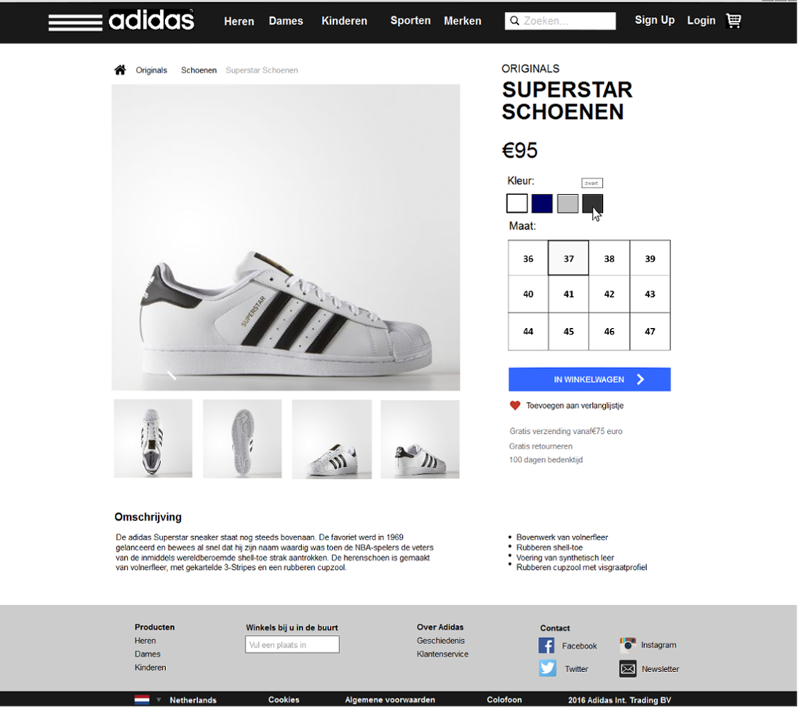

Deliverables
Hieronder staan alle opdrachten die ik gemaakt heb. Het merendeel bestaat uit individuele opdrachten, maar er zit ook een groepsopdracht tussen.
VISUAL DESIGN | WEEK 4

Omschrijving:
Maak visual designs van een homepage en product pagina van een sportmerk. Werk deze uit voor gebruik op mobiel en voor gote (desktop) schermen
GROEPSOPDRACHT: WASSEPOESTER | WEEK 4
Omschrijving:
Maak een website voor een keten wasserettes die een nieuw publiek aan moet spreken, namelijk de Nederlandse middenklasse. Alles wat vervelend is aan je was brengen moet zoveel mogelijk gecompenseerd worden. De website is hier een belangrijke component in.
SOCIAL DESIGN | WEEK 3
Omschrijving:
Kies een website of een applicatie en maak een analyse van de sociale interacties en benoem deze. Kijk of je ze kunt linken aan de principes van Cialdini. Maak daarna aanpassingen die je zou doen ter verbetering van de bestaande interacties, of maak nieuwe interacties. Onderbouw deze en werk hem uit met screen design of wireframes.
INFORMATION AND STRUCTURE | WEEK 3

Omschrijving:
Ontwerp een dieetdagboek voor de iPhone. Maak een wireflow van een gebruiker die de applicatie voor het eerst gebruikt. Werk de wireflow uit in een prototype en doe een gebruikerstest.
USER TESTING | WEEK 2
Omschrijving:
Test met een groepjes van 3 een (specficiek onderdeel van een) website of applicatie met minimaal 2 testpersonen (first time users). Maak eerst een testplan, bepaal welke testmethodes jullie gaan gebruiken en wat jullie verwachtingen zijn. Maak een testscript en voer de test daarna uit en trek jullie conclusies.
DIVERGENT THINKING | WEEK 2
Omschrijving:
Bedenk een product dat recent-gediagnostiseerde diabetes patiënten help met het beter begrijpen en het onder de controle krijgen van hun aandoening.
TOOLS: PENCIL, PHOTOSHOP, INDESIGN | WEEK 1
Omschrijving:
Maak 3 verschillende voorstellen (in lay-out in informatiestructuur) voor je portfoliosite in Pencil. Werk het beste voorstel uit in Photoshop. Schrijf als laatst een verslag van je ontwerp in InDesign.
TOOLS: PREMIERE & HTML, CSS | WEEK 1
Omschrijving:
Kies één van de volgende clips, en maak er een video bij. Dat wil zeggen, laad hem in Adobe Premiere als audiotrack, en monteer er een collectie clips overheen. Deze clips hoeven niet van jezelf te zijn. Upload het resultaat online.